From conversations to structured evidence for founders
FoundersBrew's AI agent helps early-stage founders move beyond validating their assumptions to gathering evidence from their target audience through agentic discovery interviews.
The problem
Founders often enter discovery with assumptions about their ideas and unintentionally seek validation rather than genuine insights. Feedback is often scattered across calls, messages, documents, and spreadsheets, which makes it difficult to identify meaningful patterns. As a result, founders risk mistaking encouragement for evidence and making build decisions based on weak signals, potentially leading them to build the wrong product.
The challenge is the lack of a structured system that guides founders through discovery with their target audience and helps them gather reliable evidence.
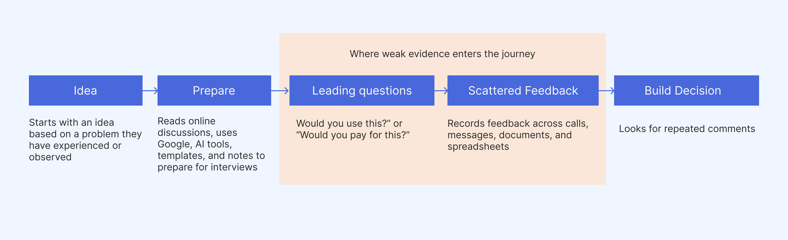
The solution
An interview agent that adapts to the conversation and a system that synthesizes the evidence.
Founder context
Founders answer a few questions about their idea, target audience and the problem they are trying to solve. The system combines their inputs with secondary research to build context for discovery.
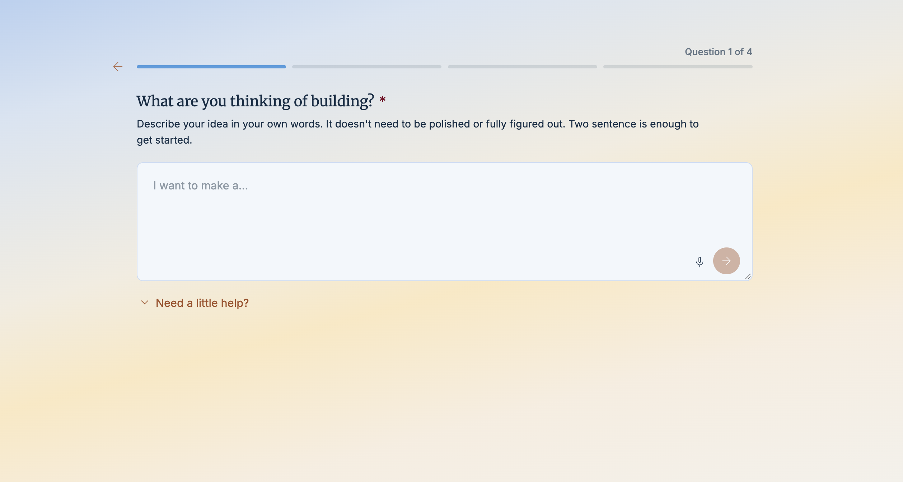
Adaptive interview
The AI agent uses this context to conduct interviews, asking follow-up questions, listening, probing and clarifying based on what participants share.
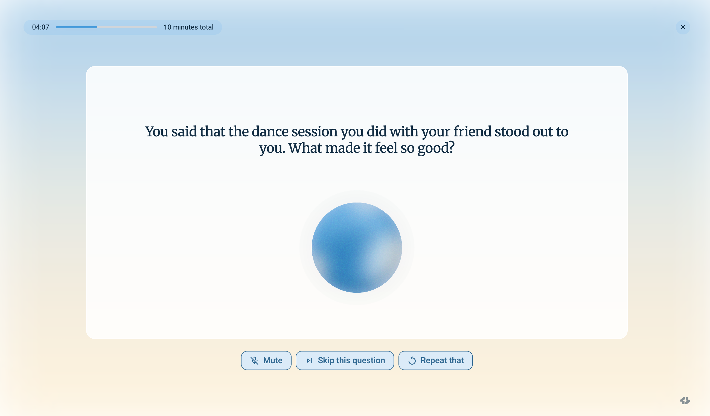
Evidence
The system tells which hypotheses got validated and what was challenged.
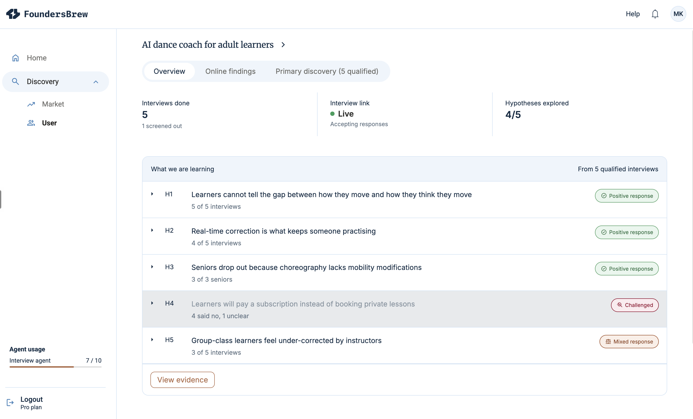
Outcome
30+ interviews
A total of 7 founders, who are FounderBrew's early product collaborators in the alpha release conducted a total of 38 interviews, which gave us valuable feedback for release 2.0
Bias detection rules defined
I defined the bias types, edge cases and validation rules gave engineering clear, testable requirements to build from.
Foundations for trustworthy AI
Every finding can be traced back to the transcript, biased exchanges are caught before they reach the synthesis, and new checks can be added as the product grows.
Early product collaborators
"I used the FoundersBrew discovery agent to better understand what products my target audience was looking for. It helped me challenge my assumptions and reduce uncertainty around key business decisions."
Understanding the landscape
The first thing I did was to understand where the FoundersBrew interview agent would stand. I went onto understand who our competitors were, what other adaptive interview agents were available.
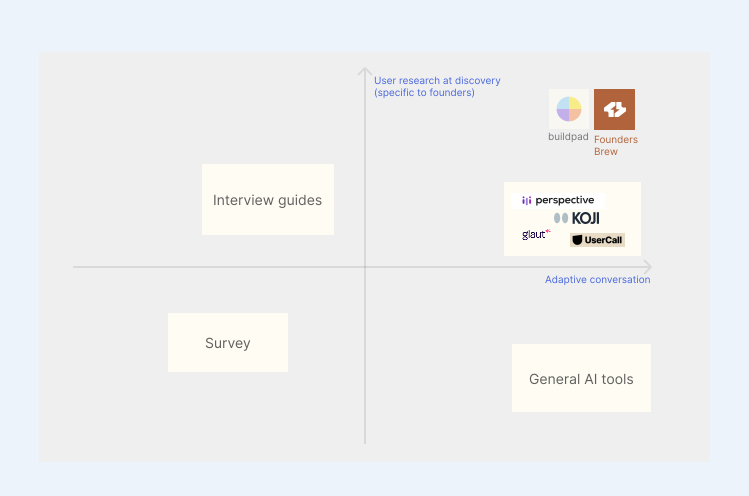
This not only provided direction but also helped me think how this agentic system should work
But will people willingly talk to an AI agent?
I did a secondary research and explored findings, that showed credible information and AI-led interviewing wasn't entirely new. Competitors were already developing compelling conversational research products, but I wanted to understand whether there was evidence of genuine participant willingness, beyond the technology itself.
Our competitor Buildpad had already demonstrated the product concept and this was FoundersBrew me-too approach, bringing AI-led interviewing into the early-stage founder discovery workflow.
I would have loved to run a behavioural experiment here to see how people respond to an AI-led interview. If someone received a link to an interview about a topic they were genuinely interested in, would they take part without any incentive or reward?
Visual design direction
As FoundersBrew prepared for its accelerator applications in early 2027, I prioritised a lightweight, scalable UI that aligned with the product's early-stage goals and engineering constraints.
I used reusable components, consistent interaction patterns and progressive disclosure to create an intuitive experience while reducing implementation complexity and maintenance effort.
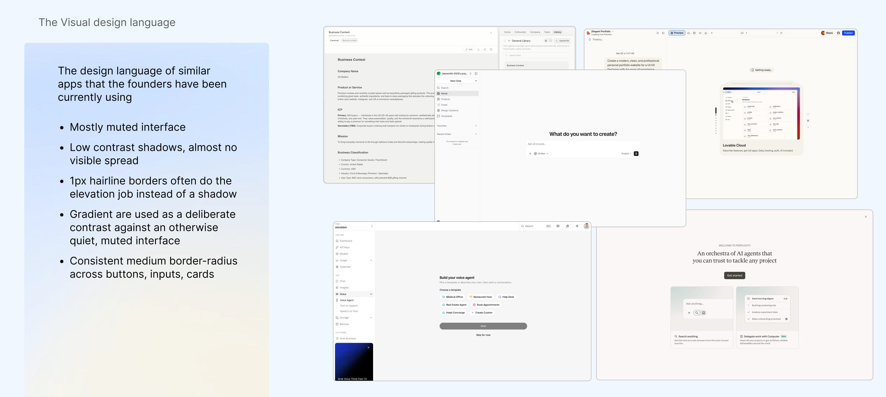
This was a deliberate design decision that allowed the team to iterate faster and focus engineering resources on validating the product's core strength which is delivering high-quality adaptive AI interviews.
Human in the loop
I designed the workflow around a human-in-the-loop approach, where AI handles research and analysis while founders retain control over key decisions. The challenge was deciding where the system should take responsibility and where founders needed to remain involved.
This shaped three parts of the experience, how founders provide context, choose what gets tested, and control the evidence used in synthesis.
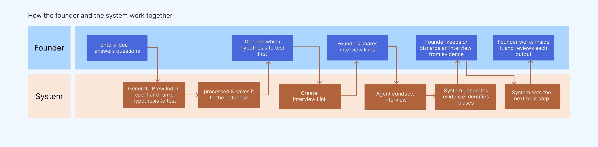
Helping founders provide the right context
The process begins with founders describing their ideas, target audiences, and the problems they want to solve. FoundersBrew's questionnaire is not a conventional onboarding form. It is the input layer for a research system. The four answers influence which market the system investigates, which users and conversations it looks for, which competitors and substitutes it identifies, which hypotheses it generates, and the context supplied to the discovery agent.
That makes the objective different from simply maximizing form completion. The questionnaire should optimize for answers that are specific, researchable, honest about uncertainty, and recognizably the founder's own thinking.
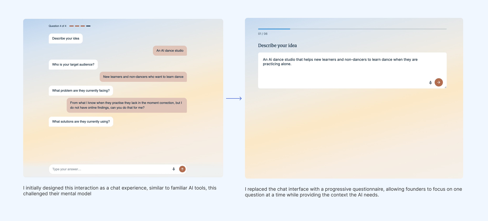
Reduce the effort required to understand each question, while preserving the effort required to think about the answer.
Why I added 'not sure yet' as a valid response
Reduced cognitive load
I gave founders a way to move forward without having to formulate an answer they weren't ready to provide.
Prevented forced assumptions
I reduced the risk of founders inventing information simply to complete the questionnaire.
Preserved research integrity
I ensured the system could distinguish between assumptions founders had actually expressed and areas where they remained uncertain.
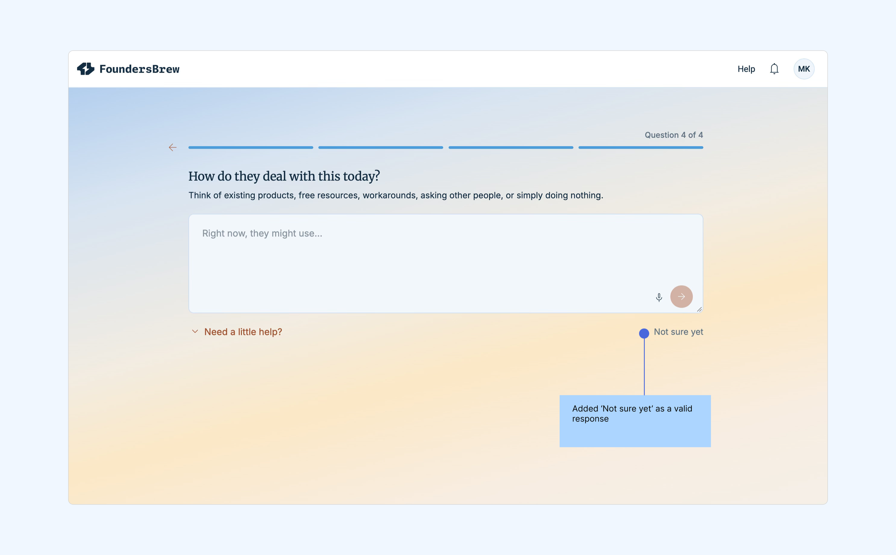
Why I decided against integrating AI in the onboarding questionnaire?
More friction
A simple questionnaire becomes an unpredictable conversation with additional questions before the founder gets any value.
False precision
AI might push founders to elaborate on assumptions they haven't verified, making guesses sound more concrete than they really are.
Unnecessary complexity
This would add cost, latency, and another experience to design and test without knowing whether it improves the research output.
Letting founders decide what gets tested first
Once founders provide their context, FoundersBrew combines their inputs with secondary research to generate hypotheses, ranked by risk. While the system recommends which assumptions to test first, the final decision remains with the founder.
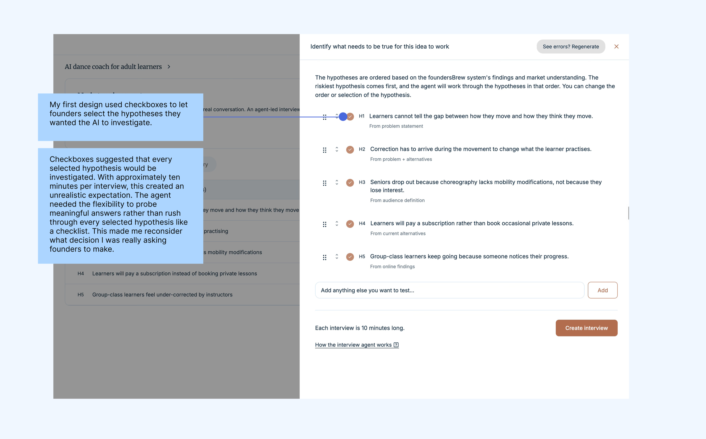
Initially, this felt like a straightforward way to give founders control. But as I considered how the adaptive agent would actually conduct interviews, I noticed a mismatch between the interaction and the system's behaviour.
Founders didn't necessarily need to choose which hypotheses were included or excluded. They needed to influence where the agent should begin. So I shifted from a selection model to a prioritisation model.
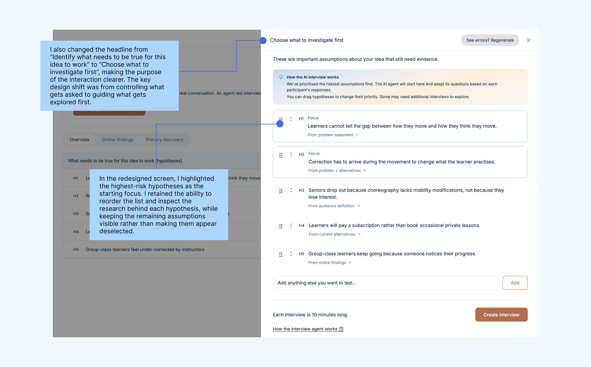
Giving founders control over the evidence
Not all interviews are of the same quality, and the founder can decide if they want to remove a particular interview from the synthesis, if they spot a quality issue, or a target audience mismatch. So I designed an option for founders to exclude questionable interviews without deleting the original research.
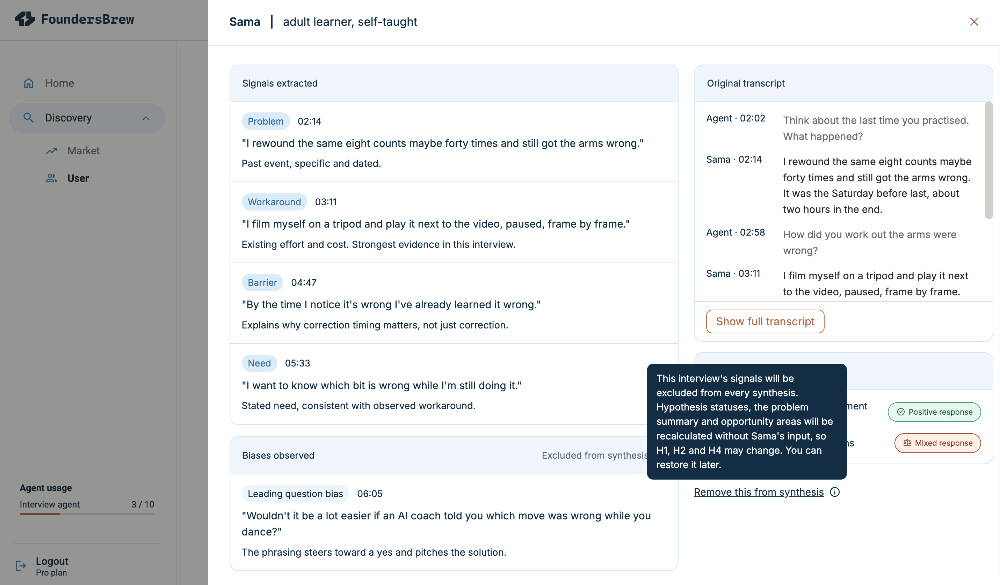
The interface explains how this decision impacts hypothesis statuses and other findings, while allowing interviews to be restored later. This ensures founders can intervene when evidence quality is in question rather than relying entirely on AI-generated conclusions.
But the human control can introduce another form of bias...
While exploring human-in-the-loop patterns in AI-first products, I realised that giving users more control doesn't automatically make a system more trustworthy. Allowing founders to exclude interviews introduced an unintended risk.
What if founders removed interviews simply because the findings challenged their assumptions?
This could reinforce the very confirmation bias FoundersBrew was designed to address. I needed to consider the difference between giving founders control over research quality and allowing them to selectively remove inconvenient evidence.
...so how might we prevent founders from selectively excluding interviews that challenge their assumptions, while still giving them control over the quality of their research evidence?
This pushed me to look beyond conventional UX patterns and led me to behavioural design. I came across research on accountability and decision-making, particularly how asking people to justify their choices can encourage more deliberate thinking. It made me reconsider something we often prioritise in UX, 'reducing friction'
What if removing friction wasn't always the right thing to do?
In this case, making interview exclusion effortless could allow founders to dismiss uncomfortable evidence without reflecting on why they were doing so. I explored introducing a small amount of intentional friction at the point of exclusion.
Ask for a reason
Encourage founders to articulate why an interview should be excluded, rather than acting on impulse.
Make the impact visible
Show how excluding the interview could change synthesis findings and hypothesis statuses.
Preserve accountability
Keep a record of excluded interviews and their reasons, with the ability to restore them later.
Founders would be asked to provide a reason for excluding an interview and understand how that decision could affect their findings. The original research would remain accessible, and exclusions could be reversed.
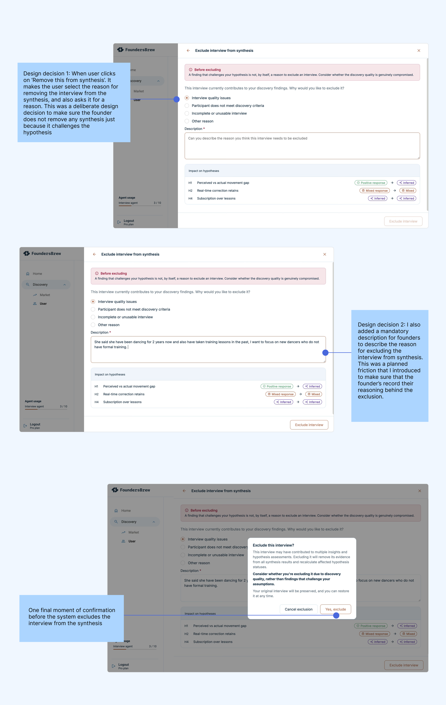
The intention was to create a moment where they could reconsider whether they were questioning the quality of the evidence or simply disagreeing with what it revealed.
Making exclusion decisions visible
Instead of simply marking the interview as excluded, I designed the interface to keep the reason and explanation visible alongside the decision, while providing an option to restore it. The behavioural reasoning was to make founders aware of their past decisions and encourage them to reconsider those choices when reviewing their research.
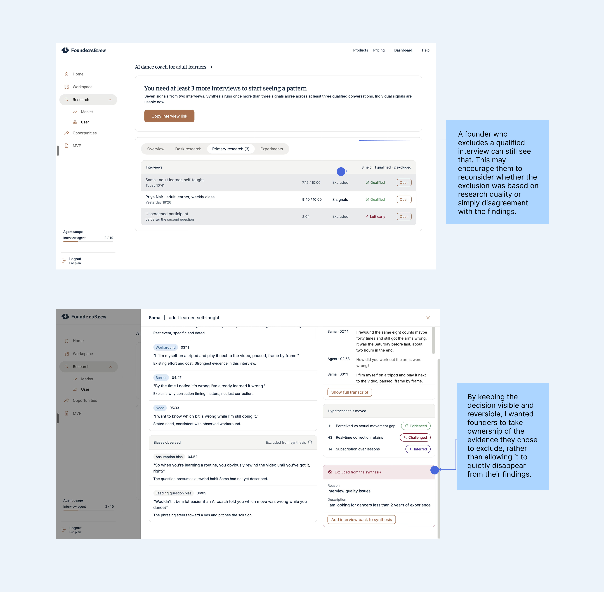
The outcome
Rather than adding human oversight as a final approval step, I embedded it throughout the research workflow. Founders provide the context, choose what to investigate, and decide which evidence to trust. The AI supports them through research, prioritization, interviews, and synthesis.
This creates a workflow where AI does the analytical work, while founders remain responsible for the decisions that shape their ideas.
The agent workflow and bias detection
To ensure that founders weren't making decisions based on misleading evidence it was important to get it the bias detection right, but where do you even begin when bias can take so many forms?
Starting with uncertainty
The first thing I needed to understand was which biases we could realistically detect. Trying to address every type of bias in the first version wasn't feasible. Bias detection would need to be introduced incrementally, with the system evolving and becoming more capable over time. After conducting secondary research, I narrowed the scope to four types of biases that the first version would focus on
Leading Question Bias
Prevents suggestive questioning from going unnoticed.
Assumption Bias
Flags unvalidated assumptions embedded in the agent's questions.
Confirmation Bias
Identifies questioning or statements that disproportionately supports the founder's hypothesis.
Response Contamination
Detects instances where the agent may have shaped participant answers.
The design decision: I prioritised the biases most directly connected to agent behaviour and insight reliability, rather than attempting comprehensive bias detection in the first release. The selection was guided by three factors: impact on research quality, detectability from interview transcripts, and implementation feasibility.
Bridging UX research and engineering
Bias isn't always obvious from a single question. The same wording could be leading in one conversation and a legitimate follow-up in another.
I needed to communicate this nuance to engineering in a way that could inform the bias-detection framework. I translated these considerations into five scenarios.
Clearly biased exchanges
Could it recognise questions with strong evidence of bias?
Neutral follow-ups
Would it avoid flagging legitimate research questions?
Ambiguous exchanges
How would it handle questions that could reasonably be interpreted in different ways?
Context-dependent questions
Would its assessment change based on what the participant had already established?
Multiple bias instances
Could it identify separate issues without duplicating or misclassifying findings?
I defined what the system should consider before flagging an exchange as biased
- Who introduced the idea? Was it the participant or the agent?
- Was an assumption introduced as a fact?
- Did the question suggest a preferred answer?
- Did the participant's subsequent response appear influenced by that framing?
- Is there an equally plausible, non-biased interpretation?
Key requirement: A question shouldn't be marked as biased solely because of its wording. The surrounding conversation matters.
My contribution was defining the research-quality criteria and scenarios while engineering was responsible for implementing the detection and validation logic.
How this shows up in the product and affects synthesis
I used my experience in UX research and did a desk research to define how to handle potentially compromised interview data. One rule for any research finding is that it should remain grounded in what participants independently said or did, rather than conclusions shaped by the interviewer's assumptions.
This influenced an important decision for FoundersBrew
Exchanges flagged for bias would be excluded from evidence synthesis, but remain visible to the founder, making it clear for the founder to understand why certain responses were not considered.
The interview experience
When I was designing the interview experience, I first wrote down how the experience feels like when I conduct a one-to-one user interview, and prioritised what should go in phase one and what can wait, based on what people expect from an agent.
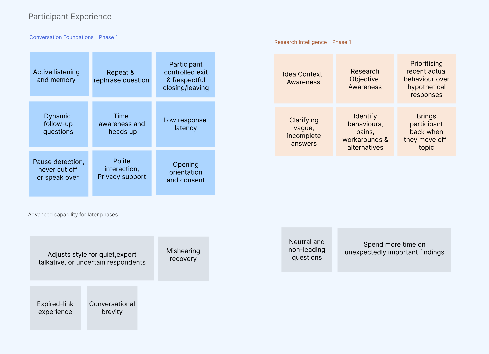
I developed the participant journey by referring findings from research on AI-moderated interviews & conversational interaction and mapped the HAX guidelines to it.
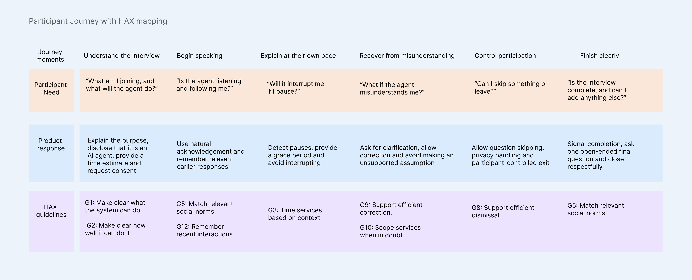
I with the engineering team created a fixed question prototype on ElevenLabs to test the interaction with the users and get their feedback. The ElevenLabs prototype had a fallback textbox, that was later incorporated in the design, because I observed users using the textbox to type in their answers when they were uncomfortable or it was inconvenient to speak.
What changed after testing the prototype?
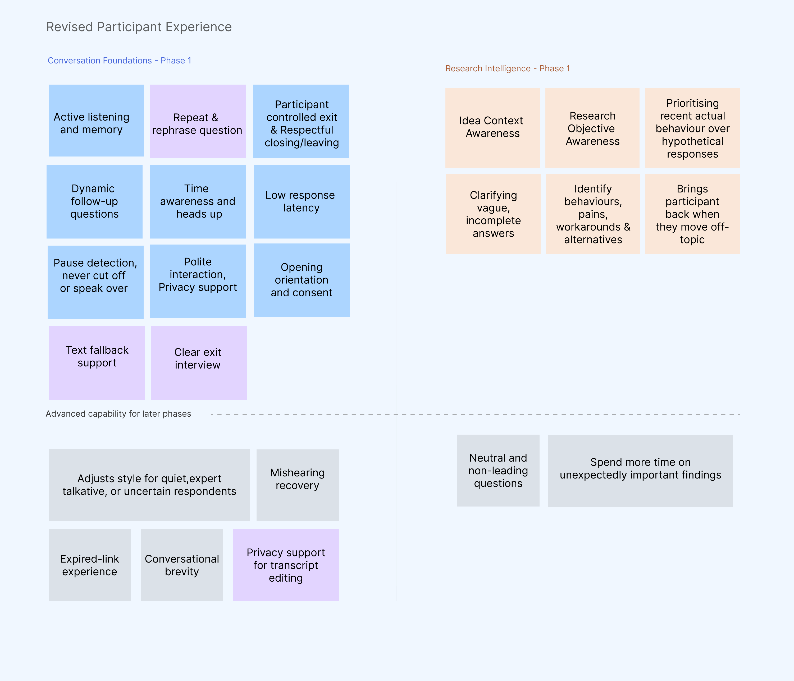
I backed the findings with another secondary finding
Conversational Comfort
Only 3 of 10 participants felt the AI conversation was natural
NNG, 2026
Feeling Heard
Participants contributed 34% of the words with AI moderators, compared with 64% with human moderators.
MeasuringU study, 2026
Recovery and Control
Offering options was the highest ranked of eight conversational repair strategies
IBM study, 2022
Privacy and Reassurance
Participants using AI-assisted transcript editing removed 41.2% of personally identifiable information.
Doi org, 2026
Revised joining experience for users getting interviewed
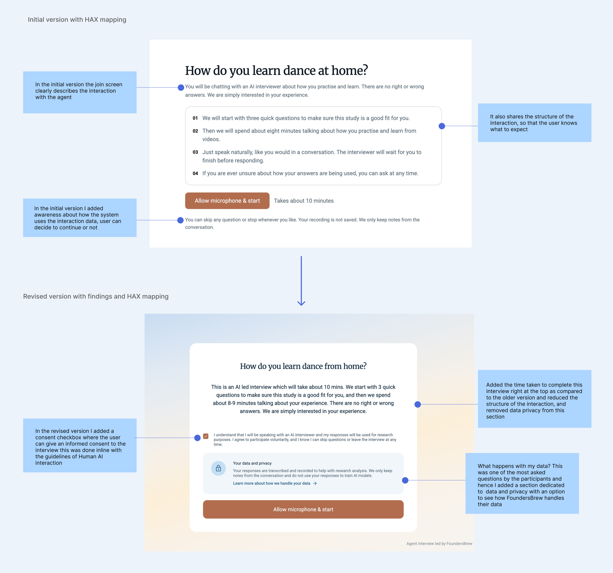
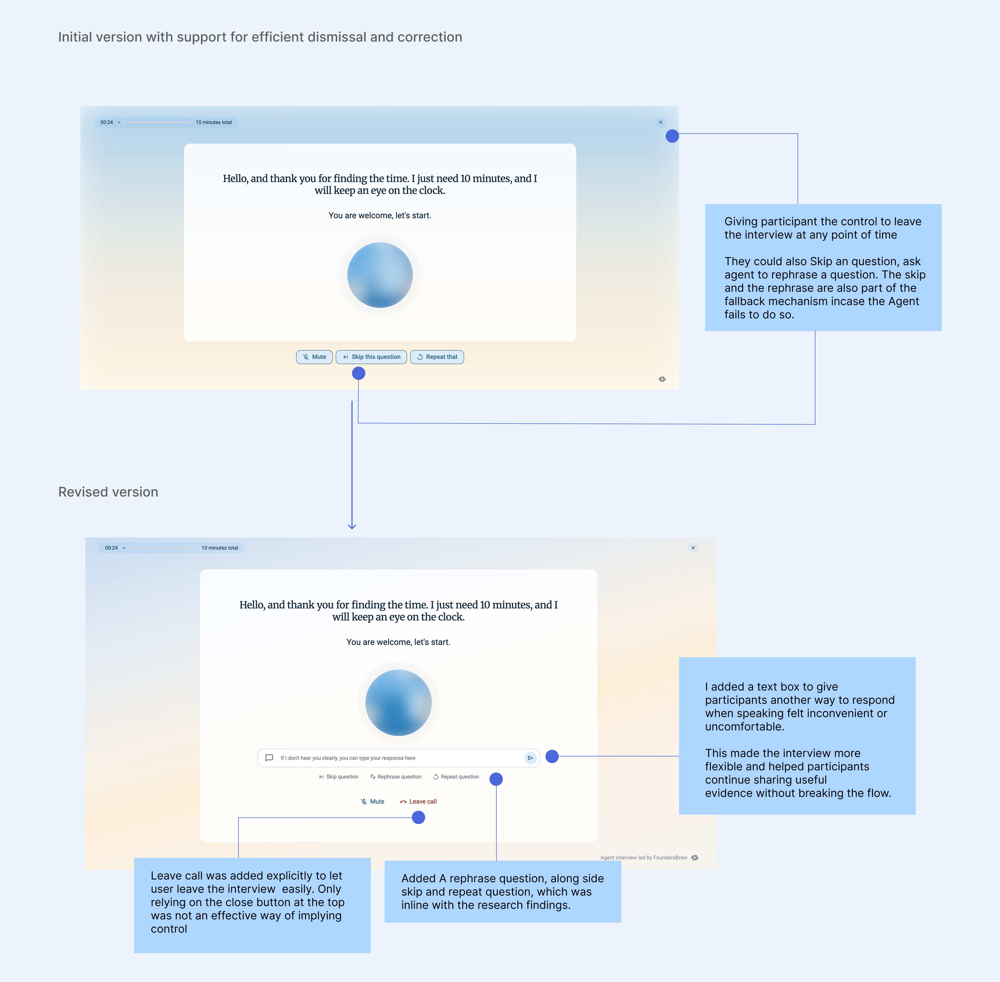
The textbox became more than an accessibility fallback
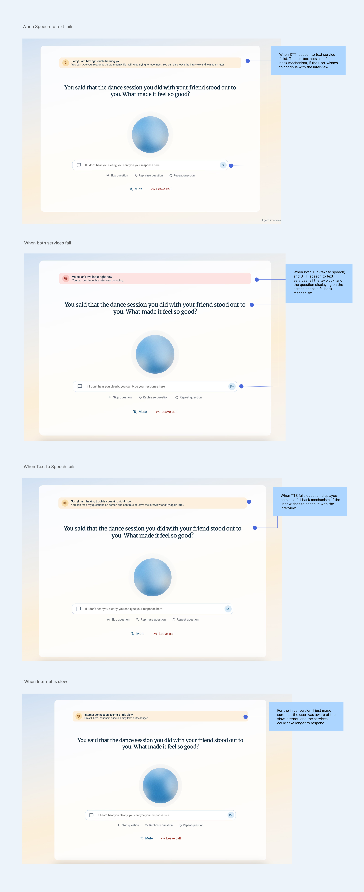
How does matching relevant social norms look like on the UI
HAX guideline: Match relevant social norms
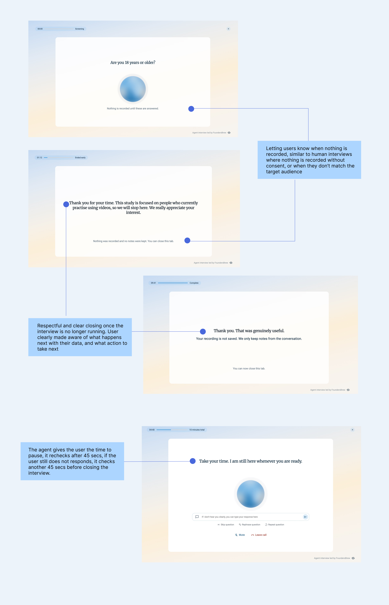
My takeaways
Clarity comes through action.
When faced with uncertainty, breaking a complex problem into smaller, testable decisions helped me move forward rather than waiting for complete clarity.
Intentional friction can be good friction.
Not every interaction needs to be effortless. Sometimes encouraging people to pause, question an outcome and take responsibility for their decisions creates a more meaningful experience.
Combining LLMs with deterministic workflows creates a more accountable system.
LLMs can interpret conversational context, while deterministic checks make outputs more structured, traceable and easier to verify.
Trust comes from transparency, not certainty.
AI-generated findings shouldn't be trusted simply because they sound convincing. Making the underlying evidence visible and allowing people to question an assessment is just as important as producing the assessment itself.